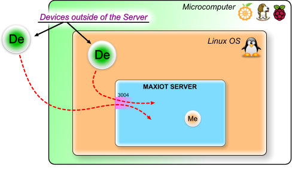
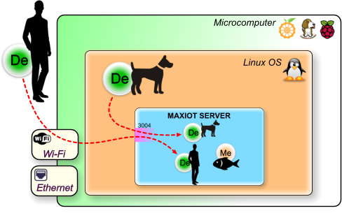
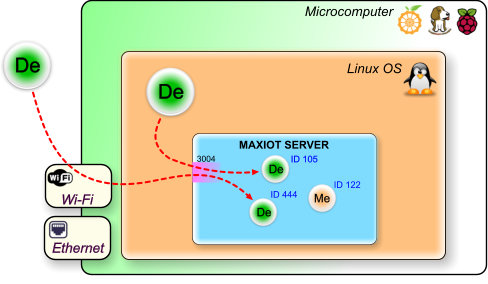

MAXIOT სისტემია¶
MAXIOT სისტემია ეს არის ინსტრუმენტი, რომლის საშუალებითაც, ვახდენთ ფიზიკური მოწყობილობების განთავსებას ვირტუალურ სამყაროში. ასეთი ტრანსფორმაციის მიზანია, ფიზიკური და ვირტუალური მოწყობილობების საერთო ვირტუალურ სივრცეში ერთმანეთთან დაკავშირება.
სარჩევი
MAXIOT SERVER¶
MAXIOT SERVER-რი ეს არის MAXIOT სისტემის მთავარი ნაწილი, რომელიც უზრუნველყოფს საგნების ინტერნეტისთვის (IOT) საჭირო ყველა ძირითად ფუნქციებს.
ზოგადი აღწერა¶
MAXIOT SERVER-რი უზრუნველყოფს იმ ვირტუალურ სამყაროს არსებობას, რიმელშიც იმყოფება ფიზიკური სამყაროდან შემოყვანილი და ასევე ვირტუალური სამყაროში შექმნილი ლოკალური ვირტუალური მოწყობილობები. ასეთ მოწყობილობებს სისტემაში, MAXIOT კომპონენტები ეწოდება. MAXIOT SERVER-რი ასევე უზრუნველყოფს კომპონენტების შორის შექმნილი კავშირების არსებობას. MAXIOT SERVER-რიში ფიზიკური მოსწყობიობების შემოყვანას, ვირტუალური მოწყობილობის შექმნას და მათ შორის კავშირების მენეჯმენტი ხდება MAXIOT STUDIO - ვებ აპლიკაციის საშუალებით. MAXIOT STUDIO-სთან დაკავშირებული საკითხები განიხილულია ამ დოკუმენტაციის შესაბამის სექციაში.
MAXIOT SERVER-რის აპლიკაცია დაწერილია C ენის გამოყენებით და მის სამუშაო გარემოს წარმოადგენს ლინუქსის ოპერაციული სისტემა. სერვერის შეიძლება დაკომპილირდეს როგორც ARM ასევე x86 არქიტეკტურის კომპიუტერებზე, შესაბამისად სერვერის დაინსტალირება შესაძლებელია პრაქტიკულად ნებიმიერი მიკროკომპიუტერის ან ვირტუალური კომპიუტერის პლათფორმაზე. MAXIOT SERVER-რის პროგრამული კოდი დაწერილია ისე , რომ რაც შეიძლება ოპტიმიალურად იყოს გამოიყენებული კომპიუტერის პროცესორის და ოპერატიული მეხსიერების რესურსები.

კავშირი სერვერთან¶
ისევე როგორც მრავალი სხვა სერვერი MAXIOT SERVER-იც ჩართულია კომპიუტერულ ქსელში და მასთან დაკავშირება ხდება ინტერნეტ TCP/IP ქსელური პროტოკოლის საშუალებით. სხვადასხვა გარე მოწყობილობები შემოდიან MAXIOT SERVER-ში სპეციალურად მათთვის შექმნილი 3004 პორტის გავლით. (რა არის პორტი) თუ სერვერს წამოვიდგენთ როგორც რამე დაწესებულება, მაშინ პორტი ეს არის რომელიმე ოთახის კარები. დაწესებულებაში არსებულ ყველა ოთახს გააჩნია კარებეი თავისი უნიკალური ნომრით, შესაბამისად დაწესებულებაში შემოსულმა კლიენტმა იცის რა მისთვის საჭირო ოთახის ნომერი, პირდაპირ მიემართება შესაბამის ოთახისკენ.

ლოკალური ვირტუალური მოწყობილობება არ იყენებს 3004 პორტს, რადგან ის ისედაც იმყოფება სერვერის ვირტუალურ სივრცეში. ამ მოწყობილობას ქვია მედიატორი(Me) რადგან მხოლოდ ამ კომპონენტს შეუძლია მონაცემების უშუალოდ სერვერზე, ვირტუალურ სივრცეში დამუშავება. უფრი დაწვრილებით ჩვენ მას განვიხილავთ დოკუმენტაციის შესაბამის სექციაში. კომპონენტი მედიატორი გამოსახუია ნახატში როგორც ნარინჯისფერი წრე, შიგნით განთავსებული Me სიმბოლოთი.

ყველა დანარჩენი მოწყობილობა რომელიც, არ იმყოფება უშუალოდ MAXIOT SERVER-ზე ითვლება, სერვერის გარე მოწყობილობად. მნიშვნელობა არა ქვს იმას თუ სად იმყოფება ეს მოწყობილობა - უშუალოდ იმავე მიკროკომპიუტერში, რომელშიც იმყოფება MAXIOT SERVER-რი თუ სადმე სხვაგან, ათასობით კილომეტრით მოშორებით, იქნება ის ფიზიკური თუ ვირტუალური(რაიმე პროგრამა გაშვებული რაიმე კომპიუტერზე) - ყველა ეს მოწყობილობა MAXIOT SERVER-იში შემოსასვლელად იყენებს 3004 პორტს. სერვერის გარე მოწყობილობები ნახატში წარმოდგენილია, როგორც მწვანე წრე, შიგნით განთავსებული De სიმბოლოთი.
{kind=link}
სერვერის გარე მოწყობილობები¶
იმის მიხედვით თუ სად იმყოფება სერვერის გარე მოწყობილობები, ჩვენ შეგვიძლია დავყით ისინი 2 ჯგუფად: პლათფორმის შიდა და გარე მოწყობილობად. პლათფორმა ეს არის მიკროკომპიუტერი და მასზე განთავსებლი ოპერაციული სისტემა, რომელზეც გაშვებულია MAXIOT SERVER-ი. პლათფორმის შიდა მოწყობილობად ითვლება ყველა ის მოწყობილობა რომელიც იმყოფება უშუალოდ იმავე ოპერაციული სისტემაში სადაც იმყოფრბა MAXIOT SERVER-ი. პლათფორმის გარე მოწყობილობაა, ყველა ის მოწყობილობა, რომელიც იმყოფება იმ მიკროკომპიუტერის გარეთ, რომელზეც არის გაშვებული MAXIOT SERVER-ი. პლათფორმული გარე მოწყობილობას, უბრალოდ გარე მოწყობილობას უძახიან.

გარე ქსელთან კავშირი¶
არსებობს 2 ძირითადი საშუალება, რომ MAXIOT სისტემის მიკროკომპიუტერი მივუერთოთ გარე კომპიუტერულ ქსელს. ეს არის Wi-Fi (უკაბელო) და Ethernet -ტი. პლათფორმის გარე მოწყობილობები ძირითადათ იყენებენ გარე კომპიუტერულ ქსელს MAXIOT SERVER-რთან კავსირის დასამყარებლად. ასევე გარე კომპიუტერული ქსელის გავლით ვახდენთ სისტემის კომპიგურაციას. იმ შემთხვევაში თუ პროექტში არ არის გამოყენებული პლათფორმის გარე მოწყობილობები, სისტემა შეგვიძლია გავთიშოთ გარე კომპიუტერის ქსელიდან და ჩავრთოთ მხოლოდ სისტემის დაკომფიგურირების საჭიროების შემთხვევაში.

MAXIOT SERVER-ში მიმდინარე პროცესები¶
შედარება: იმისთვის რომ უკეთესაგ გავიგოთ MAXIOT SERVER-ში მიმდინარე პროცესები, მოდით განვიხილოთ შემდეგი შედარება: წარმოვიდგნოთ რომ პლათფორმის შიდა მოწყობილობები რომლებიც იმყოფებიან იმავე ოპერაციული სისტემაში სადაც დაინსტალირებულია MAXIOT SERVER-რი წარმოადგენენ ცხოველიებს. ხოლო პლათფორმის გარე მოწყობილობები წარმოადგენენ ადამიანებს და მედიატორები (MAXIOT SERVER-რი შიდა ვირტუალური მოწყობილობები) წყლის ბინადრებს - თევზებს. მაშინ ჩვენის სისტემა გამოსახვა შემდეგ ნაირად:

და თუ წარმოვიდგენთ რომ MAXIOT SERVER-ში არსებული ვირტუალური სივრცე ეს არის ტბა, მაშინ ჩვენ დავინახავთ შემდეგ სურათს:

ტბის პირას მყოფი ადამიანის და ძაღლის ფორმები აისახა ტბაში როგორც ანარეკლი. და თუ გავითვალისწინებთ იმას რომ ანარეკლი 100% გადმოსცემს ადამინის და ძაღლის ვიზუალურ მხარეს, ოპტიკური ეფექტის კუთხით, შეგვიძლია ვთქვათ რომ ადამიანი და ძაღლი ტბაში არიან იქ სადაც დაცურავენ თევზები. ტბის ზედაპრზე არსებული ანარეკლი აბსოლუტურად გადმოსცემს ყველა იმ მოქმედებებს რასაც ასრეულებს ადამიანი და ძაღლი, თიქოს ანარეკლი ადამიანის და ძარლის ავატარია, რომელიც არსებობს ტბის ზედაპირზე. ზუსტად იგივე პროცესი მიმდინარეობს MAXIOT SERVER-რში, იმ განსხვავებით, რომ უშუალოდ ჩვენ ვაძლევთ უფლებას გამოჩნდეს თუ არა ამა თუ იმ ობიექტის ანარეკლი ტბის ზედაპირზე ანუ MAXIOT SERVER-ის ვიტუალურ სივრცეში ამა თუ იმ პლატფორმის გარე მოწყობილობის ავატარის არსებობის უფლებას, უშუალოდ სისტემის მენეჯერი აძლევს.
{kind=link}
De,Me კომპონენტები¶
პლათფორმის შიდა და პლათფორმის გარე მოწყობილობას, MAXIOT SERVER-ის ვიტუალურ სივრცეში ამ კომპონენტებს ერთნაერი ვიზუალი გააჩნია, რადგან სისტემა არ განარჩევს პლათფორმის შიდა და გარე მოწყობილობას ერთმანეტისგან, მისთვის ისინი, ორივე უბრალოდ გარე მოწყობილობები, რომელიც აისახება ვირტუალურ სივრცეში როგორც De კომპონენტები. Me კომპონენტი (მედიატორი) ვიზუალურად გავს De კომპონენტს და მათ შორის განსხვავება მხოლოდ ფერში და De,Me ნიშნებია.
რიგირ ხვდება გარე მოწყობილობა თუ რომელია მიასი ავატარი ? - სისტემაში შემოსული გარე მოწყობილობა თავის ავატარს პოულობს უნიკალური ნომრის მიხედვით. უნიკალური ნომერი ID ენიჭება MAXIOT SERVER-რის ყველა კომპონენტს მათ შორის მედიატორსაც. გარე მოწყობილობამ აუცილებლად უნდა იცოდეს თავისი ავატარის(ანარეკლის) ID ნომერი. წინააღმდეგ შემთხვევაში MAXIOT SERVER-რი უარს ეტყვის დაკონექტებულ მოწყობილობას ვირტუალურ სივრცეში შემოსვლაზე.
{kind=link}
სისტემაში De,Me კომპონენტების დამატება, მათ შორის კავშირების შექმნა … სისტემის კომპიგურირება და მასზე დაკვირვების საშუალებას გვაძლევს - MAXIOT STUDIO, რომელიც განიხილულია ამ დოკუმენტაციის შესაბამის სექციაში.
MAXIOT STUDIO¶
MAXIOT STUDIO ეს არის ინსტრუმენტი, რომლის საშუალებით ჩვენ შეგვიძლია ვიმუშაოთ MAXIOT SERVER-რში რეალიზებულ ვირტუალურ სივრცესთან და სივრცეში განთავსებულ კომპონენტებთან.
ზოგადი აღწერა¶
MAXIOT STUDIO წარმადგენს ვებ აპლიკაციას, რომლის ძირითადი ნაწილი დაწერილია პროგრამული ენის - ჯავა სკრიპტის გამოყენებით. რადგან MAXIOT STUDIO წარმადგენს ვებ აპლიკაციას, მას არ ჭირდება დაინსტალირება - მისი გაშვება შეიძლება, როგორც რომელიმე ვებ საიტიდან, სადაც ის განთავსებულია, ასევე გადმოწერის შემთხვევაში უშუალოდ ლოკალურად, პერსონალური კომპიუტერიდან, ორივე შემთხვევაში MAXIOT STUDIO-ს მუშაობას უზრუნველყოფს ვებ ბროუზერი.

MAXIOT STUDIO საკმაოდ დიდი აპლიკაციაა, რომელშიც გამოყენებულია ბევრი სხვადასხვა ჯავა ბიბლიოთეკა. არსებობს განსხვავება სხვადასხვა ვებ ბროსზერებს შორის - MAXIOT STUDIO გამართულად მუშაობს Goolge Chrome ვებ ბროუზერში. მიუხედავათ იმისა, რომ Goolge Chrome ეშვება მრავალ სხვადასხვა მოწყობილობაზე, ამ ეტაპზე MAXIOT STUDIO მიერ მოთხოვნილი რესურსები, უფრო კარგად მიესადაგება პერსონალურ კომპიუტერის რესურსებს.
STUDIO ტერმინალი და საინფორმაციო დაფა¶
ინფორმაცია მალე დაემატება
STUDIO-ს დაკავშირება MAXIOT-ის სერვერთან¶
ინფორმაცია მალე დაემატება
STUDIO კომპონენტების ოთახები¶
ინფორმაცია მალე დაემატება
STUDIO კომპონენტებთან მუშაობა¶
ინფორმაცია მალე დაემატება
კომპონენტების - სისტემაში დამატება¶
ინფორმაცია მალე დაემატება